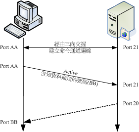
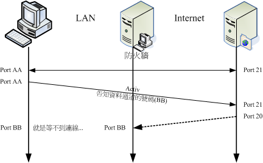
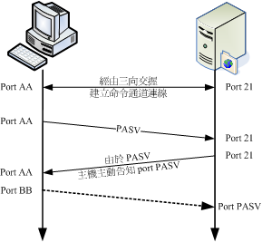
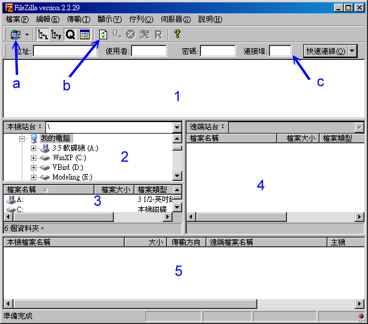
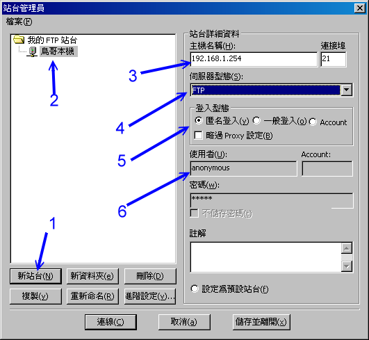
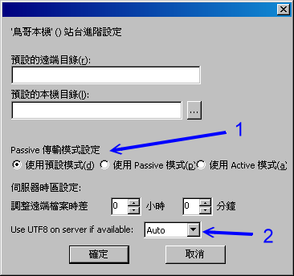
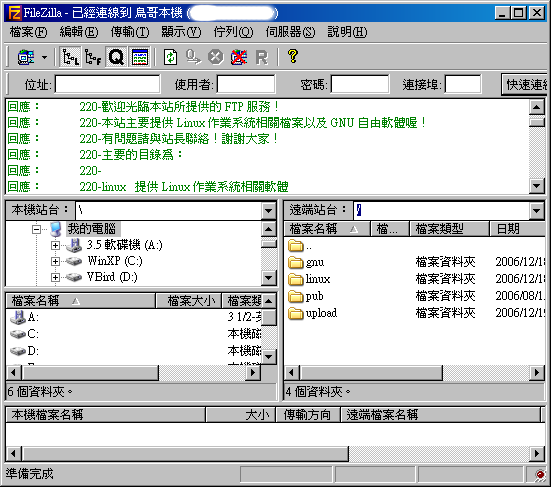

FTP 是相当古老的传输协议之一，他最主要的功能是在服务器与客户端之间进行档案的传输。
FTP 其实是以 TCP 封包的模式进行服务器与客户端计算机之间的联机，当联机建立后，使用者可以在客户端端连上 FTP
服务器来进行档案的下载与上传，此外，也可以直接管理用户在 FTP 服务器上面的档案呢，相当的方便！
而这个古老的协议是使用明码传输，且过去有相当多的安全危机历史。为了更安全的使用 FTP 协议，
我们主要介绍较为安全但功能较少的
vsftpd 这个软件吶。
 FTP 功能简介
FTP 功能简介
FTP 服务器的功能除了单纯的进行档案的传输与管理之外，依据服务器软件的设定架构，
他还可以提供几个主要的功能，底下我们约略的来谈一谈：
不同等级的用户身份：
FTP 服务器在预设的情况下，依据使用者登入的情况而分为三种不同的身份，分别是
(1)实体账号,real user；(2)访客, guest；(3)匿名登录者, anonymous
这三种。这三种身份的用户在系统上面的权限差异很大喔！
例如实体用户取得系统的权限比较完整，所以可以进行比较多的动作；至于匿名登录者，
大概我们就仅提供他下载一下资源而已，并不许匿名者使用太多主机的资源啊！
当然，这三种人物能够使用的『在线指令』自然也就不相同啰！ ^_^
命令记录与登录文件记录：
FTP 可以利用系统的
syslogd 这个 daemon 来进行数据的纪录，
而记录的数据报括了用户曾经下达过的命令与用户传输数据(传输时间、档案大小等等)的纪录呢！
所以你可以很轻松的在 /var/log/ 里面找到各项登录信息喔！
为了避免用户在您的 Linux 系统当中随意逛大街 (意指离开用户自己的家目录而进入到 Linux 系统的其他目录去)，
所以将使用者的工作范围『局限』在用户的家目录底下，嗯！实在是个不错的好主意！FTP
可以限制用户仅能在自己的家目录当中活动喔！如此一来，由于使用者无法离开自己的家目录，而且登入 FTP
后，显示的『根目录』就是自己家目录的内容，这种环境称之为 change root ，简称 chroot ，改变根目录的意思啦！
这有什么好处呢？当一个恶意的使用者以 FTP 登入您的系统当中，如果没有 chroot 的环境下，他可以到
/etc, /usr/local, /home 等其他重要目录底下去察看档案数据，尤其是很重要的 /etc/ 底下的配置文件，如
/etc/passwd 等等。如果您没有做好一些档案权限的管理与保护，那他就有办法取得系统的某些重要信息，
用来『入侵』您的系统呢！所以在
chroot 的环境下，当然就比较安全一些咯！
FTP 的运作流程与使用到的端口
FTP 的传输使用的是较为可靠的 TCP 封包协议，在前几章的
网络基础当中我们谈过，
TCP 这种封包格式在建立联机前会先进行三向交握的。不过 FTP 服务器是比较麻烦一些，因为
FTP 服务器使用了两个联机，分别是命令信道与数据流通道 (ftp-data) 。这两个联机都需要经过三向交握，
因为是 TCP 封包嘛！那么这两个联机通道的关系是如何呢？底下我们先以
FTP 预设的主动式 (active) 联机来作个简略的说明啰：

图一、FTP 服务器的主动式联机示意图
简单的联机就如上图所示，至于联机的步骤是这样的：
- 建立命令通道的联机
如上图一所示，客户端会随机取一个大于 1024 以上的埠口 (port AA) 来与 FTP 服务器端的 port 21 达成联机，
这个过程当然需要三向交握了！达成联机后客户端便可以透过这个联机来对 FTP 服务器下达指令，
包括查询档名、下载、上传等等指令都是利用这个通道来下达的；
- 通知 FTP 服务器端使用 active 且告知连接的埠号
FTP 服务器的 21 埠号主要用在命令的下达，但是当牵涉到数据流时，就不是使用这个联机了。
客户端在需要数据的情况下，会告知服务器端要用什么方式来联机，如果是主动式 (active) 联机时，
客户端会先随机启用一个埠口 (图一当中的 port BB) ，且透过命令通道告知 FTP 服务器这两个信息，并等待 FTP 服务器的联机；
- FTP 服务器『主动』向客户端联机
FTP 服务器由命令通道了解客户端的需求后，会主动的由 20 这个埠号向客户端的 port BB 联机，
这个联机当然也会经过三向交握啦！此时 FTP 的客户端与服务器端共会建立两条联机，分别用在命令的下达与数据的传递。
而预设 FTP 服务器端使用的主动联机埠号就是 port 20 啰！
如此一来则成功的建立起『命令』与『数据传输』两个信道！不过，要注意的是，
『数据传输信道』是在有数据传输的行为时才会建立的通道喔！并不是一开始连接到 FTP
服务器就立刻建立的通道呢！留意一下啰！
使用到的埠号
利用上述的说明来整理一下 FTP 会使用到的埠号主要有：
- 命令通道的 ftp (默认为 port 21) 与
- 数据传输的 ftp-data (默认为port 20)。
再强调一次，这两个埠口的工作是不一样的，而且，重要的是
两者的联机方向是不一样的！
首先， port 21 主要接受来自客户端的主动联机，至于 port 20 则为 FTP 服务器主动联机至客户端呢！
这样的情况在服务器与客户端两者同时为公共 IP (Public IP) 的因特网上面通常没有太大的问题，不过，
万一你的客户端端是在防火墙后端，或者是 NAT 主机后端呢？会有什么问题发生呢？底下我们来谈一谈这个严重的问题！
在 FTP 服务器与客户端之间具有防火墙的联机问题：
还记得我们的
防火墙章节吧？一般来说，很多的局域网络 (LAN)
都会使用防火墙 (
iptables) 的 NAT 功能，那么在 NAT 主机后端的 FTP 用户如何连接到 FTP 服务器呢？
我们可以简单的以下图来说明：

图二、若 FTP 客户端与服务器端联机中间具有防火墙的联机状态
- 命令通道的建立：
因为 NAT 主机会主动的记录由内部送往外部的联机信息，而由于命令信道的建立是由客户端向服务器端联机的，
因此这一条联机可以顺利的建立起来的；
- 数据信道建立时的通知：
同样的，客户端主机会先启用 port BB ，并透过命令通道告知 FTP 服务器，且等待主机端的主动联机；
- 主机的主动联机问题：
但是由于透过 NAT 主机的转换后，FTP 服务器只能得知 NAT 主机的 IP 而不是客户端的 IP ，
因此 FTP 服务器会以 port 20 主动的向 NAT 主机的 port BB 发送主动联机的要求。
但你的 NAT 主机并没有启动 port BB 来监听 FTP 服务器的联机啊！
了解问题的所在了吗？在 FTP 的主动式联机当中，NAT 主机将会被视为客户端，但 NAT 主机其实并非客户端啊，
这就造成问题了。如果你曾经在 IP 分享器后面连接某些 FTP 服务器时，可能偶尔会发现明明就连接上 FTP 服务器了
(命令通道已建立)，但是就是无法取得文件名的列表，而是在超过一段时间后显示『
Can't build data connection: Connection refused，无法进行数据传输』之类的讯息，
那肯定就是这个原因所造成的困扰了。
那有没有办法可以克服这个问题呢？难道真的在 Linux NAT 主机后面就一定无法使用 FTP 吗？当然不是！
目前有两个简易的方法可以克服这个问题：
- 使用 iptables 所提供的 FTP 侦测模块：
其实 iptables 早就提供了许多好用的模块了，这个 FTP 当然不会被错过！
你可以使用 modprobe 这个指令来加载
ip_conntrack_ftp 及 ip_nat_ftp 等模块，这几个模块会主动的分析『目标是 port 21 的联机』信息，
所以可以得到 port BB 的资料，此时若接受到 FTP 服务器的主动联机，就能够将该封包导向正确的后端主机了！ ^_^
不过，如果你链接的目标 FTP 服务器他的命令通道默认端口号并非标准的 21 埠号时 (例如某些地下 FTP 服务器)，
那么这两个模块就无法顺利解析出来了，这样说，理解吗？
- 客户端选择被动式 (Passive) 联机模式：
除了主动式联机之外，FTP 还提供一种称为被动式联机的模式，什么是被动式呢？
既然主动式是由服务器向客户端联机，反过来讲，被动式就是由客户端向服务器端发起联机的啰！
既然是由客户端发起联机的，那自然就不需要考虑来自 port 20 的联机啦！关于被动式联机模式将在下一小节介绍喔！
客户端选择被动式联机模式
那么什么是被动式联机呢？我们可以使用底下的图示来作个简略的介绍喔：

图三、被动式联机的方向
- 建立命令通道：
同样的需要建立命令通道，透过三向交握就可以建立起这个通道了。
- 发出 PASV 的联机要求：
当有使用数据信道的指令时，客户端可透过命令通道发出 PASV 的被动式联机要求 (Passive 的缩写)，
并等待服务器的回应；
- FTP 服务器启动数据端口，并通知客户端联机：
如果你的 FTP 服务器是能够处理被动式联机的，此时 FTP 服务器会先启动一个埠口在监听。
这个端口号码可能是随机的，也可以自定义某一范围的埠口，端看你的 FTP 服务器软件而定。
然后你的 FTP 服务器会透过命令通道告知客户端该已经启动的埠口 (图中的 port PASV)，
并等待客户端的联机。
- 客户端随机取用大于 1024 的埠口进行连接：
然后你的客户端会随机取用一个大于 1024 的端口号来对主机的 port PASV 联机。
如果一切都顺利的话，那么你的 FTP 数据就可以透过 port BB 及 port PASV 来传送了。
发现上面的不同点了吗？被动式 FTP 数据信道的联机方向是由客户端向主机端联机的喔！
如此一来，在 NAT 主机内部的客户端主机就可以顺利的连接上
FTP Server 了！但是，万一 FTP
主机也是在 NAT 后端那怎么办.....呵呵！那可就糗了吧～ @_@这里就牵涉到更深入的 DMZ
技巧了，我们这里暂不介绍这些深入的技巧，先理解一下这些特殊的联机方向，
这将有助于您未来服务器架设时候的考虑因素喔！
此外，不晓得您有无发现，透过 PASV 模式，服务器在没有特别设定的情况下，会随机选取大于 1024
的埠口来提供客户端连接之用。那么万一主机启用的端口被搞鬼怎么办？而且，
如此一来也很难追踪来自入侵者攻击的登录信息啊！所以，这个时候我们可以透过
passive ports 的功能来『限定』主机启用的
port number 喔！
FTP 的安全性问题与替代方案
事实上，FTP 是一个不太安全的传输协议呢！怎么说呢？因为 FTP 与
Telnet 相似的，
他是以『明码』的状态在因特网上面传输的，所以当然就容易被有心人士将你的数据给他抓下来，
并且加以利用啦！因此，他当然不是很安全啊！所以，在网络上大家才会常常告诫说，不要随意架设 FTP
网站啊！否则主机怎么被破解的都不晓得哩！此外，由于 FTP 软件常常会有漏洞的问题，因此也要常常更新套件喔！
另外，其实拜
SSH 所赐，目前我们已经有较为安全的 FTP 了，那就是
ssh 提供的
sftp 这个 server 啊！这个 sftp-server 最大的优点就是：『他是经过加密的资料！』所以在因特网上面流窜的时候，
嘿嘿！毕竟是比较安全一些啦！所以建议您，除非必要，否则的话使用 SSH 提供的 sftp-server
功能即可～
然而这个功能对于一些习惯了图形接口，或者是有中文档名的使用者来说，实在是不怎么方便，
虽说目前有个图形接口的
filezilla 客户端软件，不过很多时候还是会发生一些莫名的问题说！
所以，有的时候 FTP 网站还是有其存在的需要的。如果真的要架设 FTP 网站，那么还是得需要注意几个事项喔：
- 随时更新到最新版本的 FTP 软件，并随时注意漏洞讯息；
- 善用 iptables 来规定可以使用 FTP 的网域；
- 善用 TCP_Wrappers 来规范可以登入的网域；
- 善用 FTP 软件的设定来限制使用您 FTP 主机的用户的不同权限啊；
- 使用 Super daemon 来进阶管理您的 FTP 主机；
- 随时注意用户的家目录、以及匿名用户登入的目录的『档案权限』；
- 若不对外公开的话，或许也可以修改 FTP 的 port 。
无论如何，在网络上听过太多人都是由于开放 FTP 这个服务器而导致整个主机被入侵的事件，所以，
这里真的要给他一直不断的强调，要注意安全啊！
开放什么身份的使用者登入
既然 FTP 是以明码传输，并且某些早期的 FTP 服务器软件也有不少的安全漏洞，那又为何需要架设 FTP 服务器啊？
没办法啊，总是有人有需要这个玩意儿的，譬如说各大专院校不就有提供 FTP 网站的服务吗？
这样可以让校内的同学共同分享校内的网络资源嘛！不过，由于 FTP 登入者的身份可以分为三种，
你到底要开放哪一种身份登入呢？这个时候你可以这样简单的思考一下啰：
开放实体用户的情况 (Real user)：
很多的 FTP 服务器默认就已经允许实体用户的登入了。不过，需要了解的是，以实体用户做为 FTP 登入者身份时，
系统默认并没有针对实体用户来进行『限制』的，所以他可以针对整个文件系统进行任何他所具有权限的工作。
因此，如果您的 FTP 使用者没能好好的保护自己的密码而导致被入侵，那么你的整个 Linux 系统将很有可能被毁灭啊！
开放实体用户时的建议如下：
- 由于实体用户本来就可以透过网络连接到主机来进行工作 (例如 SSH)，因此实在没有需要特别的开放 FTP 的服务啊！
因为例如 sftp 本来就能达到传输档案的功能啰！
- 如果确定要让实体用户利用 FTP 服务器的话，那么你可能需要让某些系统账号无法登入才行，例如 bin, apache 等等。
最简单常用的作法是透过 PAM 模块来处理，譬如 vsftpd 这个软件默认可以透过 /etc/vsftpd.ftpusers
这个档案来设定不想让他具有登入权限的账号。
通常会建立 guest 身份的案例当中，多半是由于主机提供了类似『个人 Web 首页』的功能给一般身份用户，
那么这些使用者总是需要管理自己的网页空间吧？这个时候将使用者的身份压缩成为 guest
，并且将他的可用目录设定好，即可提供使用者一个方便的使用环境了！且不需要提供他 real user 的权限喔！
常见的建议如下：
- 仅提供需要登入的账号即可，不需要提供系统上面所有人均可登入的环境啊！
- 当然，我们在主机的设定当中，需要针对不同的访客给他们不一样的『家目录』，
而这个家目录与用户的权限设定需要相符合喔！例如要提供 dmtsai 这个人管理他的网页空间，而他的网页空间放置在
/home/dmtsai/www 底下，那我就将 dmtsai 在 FTP 提供的目录仅有 /home/dmtsai/www
而已，比较安全啦！而且也方便使用者啊！
- 针对这样的身份者，需要设定较多的限制，包括：上下传档案数目与硬盘容量的限制、
联机登入的时间限制、许可使用的指令要减少很多很多，例如 chmod 就不要允许他使用等等！
虽然提供匿名登录给因特网的使用者进入实在不是个好主意，因为每个人都可以去下载你的数据，
万一带宽被吃光光怎么办？但如同前面讲过的，学校单位需要分享全校同学一些软件资源时，
FTP 服务器也是一个很不错的解决方案啊！您说是吧。如果要开放匿名用户的话，要注意：
- 无论如何，提供匿名登录都是一件相当危险的事情，因为只要您一不小心，
将重要的资料放置到匿名者可以读取的目录中时，那么就很有可能会泄密！与其战战兢兢，不如就不要设定啊～
- 果真要开放匿名登录时，很多限制都要进行的，这包括：(1)允许的工作指令要减低很多，
几乎就不许匿名者使用指令啦、(2)限制文件传输的数量，尽量不要允许『上传』数据的设定、
(3)限制匿名者同时登入的最大联机数量，可以控制盗连喔！
如果你还想要让使用者反馈的话，那是否要架设一个匿名者可上传的区域呢？鸟哥对这件事情的看法是....
『万万不可』啊！如果要让使用者反馈的话，除非该使用者是你信任的，否则不要允许对方上传！
所以此时一个文件系统权限管理严格的 FTP 服务器，并提供实体用户的登入就有点需求啦！
总之，要依照您的需求来思考是否有需要喔！
终于要来聊一聊这个简单的 vsftpd 啰！vsftpd 的全名是『
Very Secure FTP Daemon 』的意思，
换句话说，vsftpd 最初发展的理念就是在于建构一个以安全为重的 FTP 服务器呢！我们先来聊一聊为什么 vsftpd
号称『非常安全』呢？然后再来谈设定吧！
为何使用 vsftpd
为了建构一个安全为主的 FTP 服务器， vsftpd 针对操作系统的『程序的权限 (privilege)』概念来设计，
如果你读过基础篇的
程序与资源管理章节的话，
你应该会晓得系统上面所执行的程序都会引发一个程序，我们称他为 PID (Process ID)，
这个 PID 在系统上面能进行的任务与他拥有的权限有关。也就是说， PID 拥有的权限等级越高，
他能够进行的任务就越多。举例来说，使用 root 身份所触发的 PID 通常拥有可以进行任何工作的权限等级。
不过，万一触发这个 PID 的程序 (program) 有漏洞而导致被网络怪客 (cracker) 所攻击而取得此 PID 使用权时，
那么网络怪客将会取得这个 PID 拥有的权限吶！所以，近来发展的套件都会尽量的将服务取得的 PID
权限降低，使得该服务即使不小心被入侵了，入侵者也无法得到有效的系统管理权限，这样会让我们的系统较为安全的啦。
vsftpd 就是基于这种想法而设计的。
除了 PID 方面的权限之外， vsftpd 也支持 chroot 这个函式的功能，
chroot
顾名思义就是『 change root directory 』的意思，那个 root 指的是『根目录』而非系统管理员。
他可以将某个特定的目录变成根目录，所以与该目录没有关系的其他目录就不会被误用了。
举例来说，如果你以匿名身份登入我们的 ftp 服务的话，通常你会被限定在 /var/ftp 目录下工作，
而你看到的根目录其实就只是 /var/ftp ，至于系统其他如 /etc, /home, /usr... 等其他目录你就看不到了！
这样一来即使这个 ftp 服务被攻破了，没有关系，入侵者还是仅能在 /var/ftp 里面跑来跑去而已，而无法使用
Linux 的完整功能。自然我们的系统也就会比较安全啦！
vsftpd 是基于上面的说明来设计的一个较为安全的 FTP 服务器软件，他具有底下的特点喔：
- vsftpd 这个服务的启动者身份为一般用户，所以对于 Linux 系统的权限较低，对于
Linux 系统的危害就相对的减低了。此外， vsftpd 亦利用 chroot()
这个函式进行改换根目录的动作，使得系统工具不会被 vsftpd 这支服务所误用；
- 任何需要具有较高执行权限的 vsftpd 指令均以一支特殊的上层程序 (parent process)
所控制 ，该上层程序享有的较高执行权限功能已经被限制的相当的低，并以不影响 Linux 本身的系统为准；
- 绝大部分 ftp 会使用到的额外指令功能 (dir, ls, cd ...) 都已经被整合到 vsftpd 主程序当中了，
因此理论上 vsftpd 不需要使用到额外的系统提供的指令，所以在 chroot 的情况下，
vsftpd 不但可以顺利运作，且不需要额外功能对于系统来说也比较安全。
- 所有来自客户端且想要使用这支上层程序所提供的较高执行权限之 vsftpd 指令的需求，
均被视为『不可信任的要求』来处理，必需要经过相当程度的身份确认后，方可利用该上层程序的功能。
例如 chown(), Login 的要求等等动作；
- 此外，上面提到的上层程序中，依然使用 chroot() 的功能来限制用户的执行权限。
由于具有这样的特点，所以 vsftpd 会变的比较安全一些咯！底下就开始来谈如何设定吧！
所需要的套件以及套件结构
vsftpd 所需要的套件只有一个，那就是 vsftpd 啊！^_^！如果你的
CentOS 没有安装，
请利用 yum install vsftpd 来安装他吧！套件很小，下载连同安装不需要几秒钟就搞定了！
而事实上整个套件提供的配置文件也少的令人高兴！简单易用就是 vsftpd 的特色啊！ ^_^！
这些设定数据比较重要的有：
- /etc/vsftpd/vsftpd.conf
严格来说，整个 vsftpd 的配置文件就只有这个档案！这个档案的设定是以
bash 的变量设定相同的方式来处理的，
也就是『参数=设定值』来设定的，注意，
等号两边不能有空白喔！至于详细的 vsftpd.conf 可以使用
『 man 5 vsftpd.conf 』来详查。
- /etc/pam.d/vsftpd
这个是 vsftpd 使用 PAM 模块时的相关配置文件。主要用来作为身份认证之用，还有一些用户身份的抵挡功能，
也是透过这个档案来达成的。你可以察看一下该档案：
[root@linux ~]# cat /etc/pam.d/vsftpd
#%PAM-1.0
auth required pam_listfile.so item=user sense=deny
file=/etc/vsftpd.ftpusers onerr=succeed
auth required pam_stack.so service=system-auth
auth required pam_shells.so
account required pam_stack.so service=system-auth
session required pam_stack.so service=system-auth
|
上面的特殊字体为同一行，那个 file 后面接的档案是『限制使用者无法使用 vsftpd 』之意，
也就是说，其实你的限制档案不见得要使用系统默认值，也可以在这个档案里面进行修改啦！ ^_^
- /etc/vsftpd.ftpusers
与上一个档案有关系，也就是 PAM 模块 (/etc/pam.d/vsftpd_ 所指定的那个无法登入的用户配置文件啊！
这个档案的设定很简单，你只要将『不想让他登入的账号』写入这个档案即可。一行一个账号，看起来像这样：
[root@linux ~]# cat /etc/vsftpd.ftpusers
# Users that are not allowed to login via ftp
root
bin
daemon
....底下省略....
|
瞧见没有？绝大部分的系统账号都在这个档案内喔，也就是说，系统账号默认是没有办法使用 vsftpd 的啦！
如果你还想要让某些使用者无法登入，写在这里是最快的！
- /etc/vsftpd.user_list
这个档案是否能够生效与 vsftpd.conf 内的两个参数有关，分别是『 userlist_enable, userlist_deny 』。
如果说 /etc/vsftpd.ftpusers 是 PAM 模块的抵挡设定项目，那么这个 /etc/vsftpd.user_list
则是 vsftpd 自定义的抵挡项目。事实上这个档案与 /etc/vsftpd.ftpusers 几乎一模一样，
在预设的情况下，你可以将不希望可登入 vsftpd 的账号写入这里。不过这个档案的功能会依据 vsftpd.conf 配置文件内的
userlist_deny={YES/NO} 而不同，这得要特别留意喔！
- /etc/vsftpd.chroot_list
这个档案预设是不存在的，所以你必须要手动自行建立。这个档案的主要功能是可以将某些账号的使用者 chroot
在他们的家目录下！但这个档案要生效与 vsftpd.conf 内的『 chroot_list_enable, chroot_list_file 』两个参数有关。
如果你想要将某些实体用户限制在他们的家目录下而不许到其他目录去，可以启动这个设定项目喔！
- /usr/sbin/vsftpd
这就是 vsftpd 的主要执行档咯！不要怀疑， vsftpd 只有这一个执行档而已啊！
- /var/ftp/
这个是 vsftpd 的预设匿名者登入的根目录喔！
大致上就只有这几个档案需要注意而已，而且每个档案的设定又都很简单！真是不错啊！
vsftpd.conf 设定值说明
事实上，/etc/vsftpd/vsftpd.conf 本身就是一个挺详细的配置文件，且使用『 man 5 vsftpd.conf 』则可以得到完整的参数说明。
不过我们这里依旧先将 vsftpd.conf 内的常用参数给他写出来，希望对您有帮助：
与主机较相关的设定值
- connect_from_port_20=YES (NO)
记得在前一小节提到的主动式联机使用的 FTP 服务器的埠号吗？这就是 ftp-data 的埠号；
- listen_port=21
vsftpd 使用的命令通道之端口号，如果您想要使用非正规的埠号，在这个设定项目修改吧！
不过你必须要知道，这个设定值仅适合以 stand alone 的方式来启动喔！(对于 super daemon 无效)
- dirmessage_enable=YES (NO)
当用户进入某个目录时，会显示该目录需要注意的内容，显示的档案默认是
.message ，你可以使用底下的设定项目来修订！
- message_file=.message
当 dirmessage_enable=YES 时，可以设定这个项目来让 vsftpd 寻找该档案来显示讯息！
- listen=YES (NO)
若设定为 YES 表示 vsftpd 是以 standalone 的方式来启动的！
- pasv_enable=YES (NO)
启动被动式联机模式(passive mode)，一定要设定为 YES 的啦！
- use_localtime=YES (NO)
是否使用本地时间？vsftpd 预设使用 GMT 时间(格林威治)，所以会比台湾晚 8 小时，建议设定为 YES 吧！
- write_enable=YES (NO)
如果你允许用户上传数据时，就要启动这个设定值；
- connect_timeout=60
单位是秒，在数据连接的主动式联机模式下，我们发出的连接讯号在 60 秒内得不到客户端的响应，则不等待并强制断线咯。
- accept_timeout=60
当用户以被动式 PASV 来进行数据传输时，如果主机启用 passive port 并等待 client 超过 60 秒而无回应，
那么就给他强制断线！这个设定值与 connect_timeout 类似，不过一个是管理主动联机，一个管理被动联机。
- data_connection_timeout=300
如果服务器与客户端的数据联机已经成功建立 (不论主动还是被动联机)，但是可能由于线路问题导致
300 秒内还是无法顺利的完成数据的传送，那客户端的联机就会被我们的 vsftpd 强制剔除！
- idle_session_timeout=300
如果使用者在 300 秒内都没有命令动作，强制脱机！
- max_clients=0
如果 vsftpd 是以 stand alone 方式启动的，那么这个设定项目可以设定同一时间，最多有多少
client 可以同时连上 vsftpd 哩！？
- max_per_ip=0
与上面 max_clients 类似，这里是同一个 IP 同一时间可允许多少联机？
- pasv_min_port=0, pasv_max_port=0
上面两个是与 passive mode 使用的 port number 有关，如果您想要使用 65400 到
65410 这 11 个 port 来进行被动式联机模式的连接，可以这样设定 pasv_max_port=65410 以及 pasv_min_port=65400。
如果是 0 的话，表示随机取用而不限制。
- ftpd_banner=一些文字说明
当使用者联机进入到 vsftpd 时，在 FTP 客户端软件上头会显示的说明文字。不过，这个设定值数据比较少啦！
建议你可以使用底下的设定值来取代这个项目；
- banner_file=/path/file
这个项目可以指定某个纯文本档作为使用者登入 vsftpd 服务器时所显示的欢迎字眼。
与实体用户较相关的设定值
- guest_enable=YES (NO)
若这个值设定为 YES 时，那么任何非 anonymous 登入的账号，均会被假设成为 guest (访客) 喔！
至于访客在 vsftpd 当中，预设会取得 ftp 这个使用者的相关权限。但可以透过 guest_username 来修改。
- guest_username=ftp
在 guest_enable=YES 时才会生效，指定访客的身份而已。
- local_enable=YES (NO)
这个设定值必须要为 YES 时，在 /etc/passwd 内的账号才能以实体用户的方式登入我们的 vsftpd 主机喔！
- local_max_rate=0
实体用户的传输速度限制，单位为 bytes/second， 0 为不限制。
- chroot_local_user=YES (NO)
将用户限制在自己的家目录之内(chroot)！这个设定在 vsftpd 当中预设是 NO，因为有底下两个设定项目的辅助喔！
所以不需要启动他！
- chroot_list_enable=YES (NO)
是否启用将某些实体用户限制在他们的家目录内？预设是 NO ，不过，如果您想要让某些使用者无法离开他们的家目录时，
可以考虑将这个设定为 YES ，并且规划下个设定值
- chroot_list_file=/etc/vsftpd.chroot_list
如果 chroot_list_enable=YES 那么就可以设定这个项目了！
他里面可以规定那一个实体用户会被限制在自己的家目录内而无法离开！(chroot)
一行一个账号即可！
- userlist_enable=YES (NO)
是否藉助 vsftpd 的抵挡机制来处理某些不受欢迎的账号，与底下的设定有关；
- userlist_deny=YES (NO)
当 userlist_enable=YES 时才会生效的设定，若此设定值为 YES 时，则当使用者账号被列入到某个档案时，
在该档案内的使用者将无法登入 vsftpd 服务器！该档案文件名与下列设定项目有关。
- userlist_file=/etc/vsftpd.user_list
若上面 userlist_deny=YES 时，则这个档案就有用处了！在这个档案内的账号都无法使用 vsftpd 喔！
匿名者登入的设定值
- anonymous_enable=YES (NO)
设定为允许 anonymous 登入我们的 vsftpd 主机！预设是 YES ，底下的所有相关设定都需要将这个设定为
anonymous_enable=YES 之后才会生效！
- anon_world_readable_only=YES (NO)
仅允许 anonymous 具有下载可读档案的权限，预设是 YES。
- anon_other_write_enable=YES (NO)
是否允许 anonymous 具有写入的权限？预设是 NO！如果要设定为 YES，
那么开放给 anonymous 写入的目录亦需要调整权限，让 vsftpd 的 PID 拥有者可以写入才行！
- anon_mkdir_write_enable=YES (NO)
是否让 anonymous 具有建立目录的权限？默认值是 NO！如果要设定为 YES，
那么 anony_other_write_enable 必须设定为 YES ！
- anon_upload_enable=YES (NO)
是否让 anonymous 具有上传数据的功能，默认是 NO，如果要设定为 YES ，
则 anon_other_write_enable=YES 必须设定。
- deny_email_enable=YES (NO)
将某些特殊的 email address 抵挡住，不让那些 anonymous 登入！
如果以 anonymous 登入主机时，不是会要求输入密码吗？密码不是要您
输入您的 email address 吗？如果你很讨厌某些 email address ，
就可以使用这个设定来将他取消登入的权限！需与下个设定项目配合：
- banned_email_file=/etc/vsftpd.banned_emails
如果 deny_email_enable=YES 时，可以利用这个设定项目来规定哪个
email address 不可登入我们的 vsftpd 喔！在上面设定的档案内，一行输入一个 email address 即可！
- no_anon_password=YES (NO)
当设定为 YES 时，表示 anonymous 将会略过密码检验步骤，而直接进入 vsftpd 服务器内喔！所以一般预设都是 NO 的！
- anon_max_rate=0
这个设定值后面接的数值单位为 bytes/秒 ，限制 anonymous 的传输速度，如果是 0
则不限制(由最大带宽所限制)，如果您想让 anonymous 仅有
30 KB/s 的速度，可以设定『anon_max_rate=30000』
- anon_umask=077
限制 anonymous 的权限！如果是 077 则 anonymous 传送过来的档案
权限会是 -rw------- 喔！
关于系统安全方面的一些设定值
- ascii_download_enable=YES (NO)
如果设定为 YES ，那么 client 就可以使用 ASCII 格式下载文件。
- ascii_upload_enable=YES (NO)
与上一个设定类似的，只是这个设定针对上传而言！预设是 NO
- one_process_model=YES (NO)
这个设定项目比较危险一点～当设定为 YES 时，表示每个建立的联机
都会拥有一支 process 在负责，可以增加 vsftpd 的效能。不过，
除非您的系统比较安全，而且硬件配备比较高，否则容易耗尽系统资源喔！一般建议设定为 NO 的啦！
- tcp_wrappers=YES (NO)
当然我们都习惯支持 TCP Wrappers 的啦！所以设定为 YES 吧！
- xferlog_enable=YES (NO)
当设定为 YES 时，使用者上传与下载文件都会被纪录起来。记录的档案与下一个设定项目有关：
- xferlog_file=/var/log/vsftpd.log
如果上一个 xferlog_enable=YES 的话，这里就可以设定了！这个是登录档的档名啦！
- xferlog_std_format=YES (NO)
是否设定为 wu ftp 相同的登录档格式？！预设为 NO ，因为登录档会比较容易读！
不过，如果您有使用 wu ftp 登录文件的分析软件，这里才需要设定为 YES
- nopriv_user=nobody
我们的 vsftpd 预设以 nobody 作为此一服务执行者的权限。因为 nobody 的权限
相当的低，因此即使被入侵，入侵者仅能取得 nobody 的权限喔！
- pam_service_name=vsftpd
这个是 pam 模块的名称，我们放置在 /etc/pam.d/vsftpd 即是这个咚咚！
上面这些是相当常见的 vsftpd 的设定参数，还有很多参数我没有列出来，您可以使用 man 5 vsftpd.conf
查阅喔！不过，基本上上面这些参数已经够我们设定 vsftpd 啰。
vsftpd 启动的模式
vsftpd 可以拥有两种启动的方式，分别是一直在监听的 stand alone ，一种则是透过
xinetd 这个 super daemon
来管理的方式，两种方式所使用的启动程序不太相同，而我们的
CentOS 则预设是以 stand alone 来启动的。
那什么时候应该选择 stand alone 或者是 super daemon 呢？如果你的 ftp
服务器是提供给整个因特网来进行大量下载的任务，例如各大专院校的 FTP 服务器，那建议你使用 stand alone 的方式，
服务的速度上会比较好。如果仅是提供给内部人员使用的 FTP 服务器，那使用 super daemon 来管理即可啊。
利用系统提供的 script 来启动 vsftpd
其实 CentOS 不用作任何设定就能够启动 vsftpd 啰！是这样启动的啦：
[root@linux ~]# /etc/init.d/vsftpd start
[root@linux ~]# netstat -tulnp| grep 21
tcp 0 0 0.0.0.0:21 0.0.0.0:* LISTEN 11689/vsftpd
# 看到啰，是由 vsftpd 所启动的呢！
|
如果你的 FTP 是很少被使用的，那么利用 super daemon 来管理不失为一个好主意。
不过若你想要使用 super daemon 管理的话，那就得要自行修改一下配置文件了。其实也不难啦，你应该要这样处理的：
[root@linux ~]# vi /etc/vsftpd/vsftpd.conf
# 找到底下这一行：大约在 109 行左右啦！
listen=YES
# 将他改成这样啊：
listen=NO
|
接下来修改一下 super daemon 的配置文件，底下这个档案你必须要自行建立的，原本是不存在的喔：
[root@linux ~]# vi /etc/xinetd.d/vsftpd
service ftp
{
socket_type = stream
wait = no
user = root server = /usr/sbin/vsftpd
log_on_success += DURATION USERID
log_on_failure += USERID
nice = 10
disable = no
}
|
然后尝试启动看看呢：
[root@linux ~]# /etc/init.d/vsftpd stop
[root@linux ~]# /etc/init.d/xinetd restart
[root@linux ~]# netstat -tulnp| grep 21
tcp 0 0 0.0.0.0:21 0.0.0.0:* LISTEN 32274/xinetd
|
CentOS 的 vsftpd 默认值
在 CentOS 的默认值当中，vsftpd 是同时开放实体用户与匿名用户的，CentOS 的默认值如下：
[root@linux ~]# vi /etc/vsftpd/vsftpd.conf
# 底下鸟哥仅列出有设定的项目，若无设定时，请以您系统的 man 5 vsftpd.conf
# 结果去搜寻默认值即可喔！
# 1. 与匿名者有关的信息：
anonymous_enable=YES
# 2. 与实体用户有关的设定
local_enable=YES
write_enable=YES
local_umask=022
userlist_enable=YES
# 3. 与主机有关的设定
dirmessage_enable=YES
xferlog_enable=YES
connect_from_port_20=YES
xferlog_std_format=YES
pam_service_name=vsftpd
listen=YES
tcp_wrappers=YES
|
上面各项设定值请自行
参考前一小节 vsftpd.conf 设定项目的详细说明吧。
而通过这样的设定值咱们的 vsftpd 可以达到如下的功能：
- 你可以使用 anonymous 这个匿名账号或其他实体账号 (/etc/passwd) 登入；
- anonymous 的家目录在 /var/ftp ，且无上传权限，亦已经被 chroot 了；
- 实体用户的家目录参考 /etc/passwd ，并没有被 chroot ，可前往任何有权限可进入的目录中；
- 任何于 /etc/vsftpd.ftpusers 内存在的账号均无法使用 vsftpd ；
- 可利用 /etc/hosts.{allow|deny} 来作为基础防火墙；
- 当客户端有任何上传/下载信息时，该信息会被纪录到 /var/log/vsftpd.log 中；
- 主动式联机的埠口为 port 20；
- 使用格林威治时间 (GMT)。
所以当你启动 vsftpd 后，你的实体用户就能够直接利用 vsftpd 这个服务来传输他自己的数据了。
不过比较大的问题是，
因为 vsftpd 预设使用 GMT 时间，因为你在客户端使用 ftp
软件连接到 FTP 服务器时，会发现每个档案的时间都慢了八小时了！真是讨厌啊！
所以建议你加设一个参数值，就是『 use_localtime=YES 』啰！
[root@linux ~]# vi /etc/vsftpd/vsftpd.conf
# 在这个档案当中加入这一句即可
use_localtime=YES
.....底下省略.....
[root@linux ~]# /etc/init.d/vsftpd restart
|
如此一来你的 FTP 服务器不但可以提供匿名账号来下载 /var/ftp 的数据，如果使用实体账号来登入的话，
就能够进入到该用户的家目录底下去了！真是很简单方便的一个设定啊！且使用本地端时间呢！ ^_^
仅有实体用户登入的设定
虽然在 CentOS 的默认情况当中实体用户已经可以使用 FTP 的服务了，不过我们可能还需要一些额外的功能来限制实体用户，
举例来说，限制用户无法离开家目录 (chroot) 、限制下载速率、限制用户上传档案时的权限 (mask)等等。
底下我们先列出一些希望达到的功能，然后再继续进行额外功能的处理：
- 希望使用台湾本地时间取代 GMT 时间；
- 用户登入时显示一些欢迎讯息的信息；
- 系统账号不可登入主机 (亦即 UID 小于 500 以下的账号)；
- 一般实体用户可以进行上传、下载、建立目录及修改档案等动作；
- 用户新增的档案、目录之 umask 希望设定为 002；
- 其他主机设定值保留默认值即可。
你可以自行处理 vsftpd.conf 这个档案，以下则是一个范例。注意，如果你的 vsftpd.conf 没有相关设定值，
请自行补上吧！OK！让我们开始一步一步来依序处理先：
- 先建立配置文件，这个配置文件已经包含了主要设定值：
[root@linux ~]# vi /etc/vsftpd/vsftpd.conf
# 1. 与匿名者相关的信息，在这个案例中将匿名登录取消：
anonymous_enable=NO
# 2. 与实体用户相关的信息
# 可写入，且新增目录、档案权限为 775，因为 umask 为 002 嘛！
local_enable=YES
write_enable=YES
local_umask=002
# 设定抵挡某些用户登入的项目设定值！注意，底下的档案必须存在！
userlist_enable=YES
userlist_deny=YES
userlist_file=/etc/vsftpd.user_list
# 3. 与主机有关的设定
use_localtime=YES
dirmessage_enable=YES
xferlog_enable=YES
connect_from_port_20=YES
xferlog_std_format=YES
pam_service_name=vsftpd
listen=YES
tcp_wrappers=YES
banner_file=/etc/vsftpd/welcome.txt
[root@linux ~]# /etc/init.d/vsftpd restart
|
- 建立欢迎讯息：
当我们想让登入者可查阅咱们系统管理员所下达的『公告』事项时，可以使用这个设定！那就是
banner_file=/etc/vsftpd/welcome.txt 这个参数的用途了！我们可以编辑这个档案即可。
好了，开始来建立欢迎画面吧！
[root@linux ~]# vi /etc/vsftpd/welcome.txt
欢迎光临本小站，本站提供 FTP 的相关服务！
主要的服务是针对本机实体用户提供的，
若有任何问题，请与鸟哥联络！
|
- 建立限制系统账号登入的档案
再来是针对系统账号来给予抵挡的机制，其实有两个档案啦，一个是 PAM 模块管的，一个是 vsftpd 主动提供的，
在预设的情况下这两个档案分别是：
- /etc/vsftpd.ftpusers：就是 /etc/pam.d/vsftpd 这个档案的设定所影响的；
- /etc/vsftpd.user_list：由 vsftpd.conf 的 userlist_file 所设定。
这两个档案的内容是一样的哩～并且这两个档案必须要存在才行。请你参考你的 /etc/passwd 配置文件，
然后将 UID 小于 500 的账号名称给他同时写到这两个档案内吧！一行一个账号！
[root@linux ~]# vi /etc/vsftpd.user_list
root
bin
....底下省略....
|
- 测试结果：
你可以使用图形接口的 FTP 客户端软件来处理，也可以透过 Linux 本身提供的 ftp 客户端功能哩！
关于 ftp 指令我们已经在之前的常用网络指令谈过了，
你可以自行前往参考。这里直接测试一下吧：
1. 测试使用已知使用者登入，例如 dmtsai 这个实体用户：
[root@linux ~]# ftp localhost
Connected to localhost (127.0.0.1).
220-欢迎光临本小站，本站提供 FTP 的相关服务！ <==刚刚建立的欢迎讯息
220-主要的服务是针对本机实体用户提供的，
220-若有任何问题，请与鸟哥联络！
220
Name (localhost:root): dmtsai <==登入者账号！
331 Please specify the password.
Password: <==输入密码，屏幕不会有任何讯息的显示
230 Login successful.
Remote system type is UNIX.
Using binary mode to transfer files.
ftp> bye
221 Goodbye.
|
在以上面的方式测试完毕后，你可以在登入者账号处分别填写 (1)root (2)anonymous 来尝试登入看看！
如果不能登入的话，那就是设定 OK 的啦！^_^
chroot 的使用
假设你的系统当中有许多账号，但是 dmtsai 以及 bird1 这两个账号是开放给一般客户的，
你不想让这两个账号可以离开他的家目录，这个时候就得使用 chroot 的设定了。设定的方式很简单，
你先要修改 vsftpd.conf ，增加这几个项目：
[root@linux ~]# vi /etc/vsftpd/vsftpd.conf
# 增加是否设定针对某些使用者来 chroot 的相关设定呦！
chroot_list_enable=YES
chroot_list_file=/etc/vsftpd.chroot_list
[root@linux ~]# /etc/init.d/vsftpd restart
|
然后建立要被 chroot 的使用者档案：
[root@linux ~]# vi /etc/vsftpd.chroot_list
dmtsai
bird1
|
不要怀疑！这样就能够将这两个用户限制在家目录内了，有够简单吧！
更严格的 chroot 环境
上面提到的是默认实体用户没有 chroot 而特定人士被 chroot 的环境，那如果我想要的是：
所有使用者预设为 chroot ，但某些使用者可不受限制的环境呢？
那你就得要这样做了：
[root@linux ~]# vi /etc/vsftpd/vsftpd.conf
# 默认所有实体用户被 chroot 而开放某些人可完整存取 (不 chroot) 的情况
chroot_local_user=YES
chroot_list_enable=YES
chroot_list_file=/etc/vsftpd.chroot_list
[root@linux ~]# /etc/init.d/vsftpd restart
|
由于多了 chroot_local_user=YES 这个参数，因此写入 /etc/vsftpd.chroot_list 内的使用者反而是被认为可以不受
chroot 的账号！假设系统中的 nikky 这个使用者为被信任的，所以你要这样：
[root@linux ~]# vi /etc/vsftpd.chroot_list
nikky
|
则未来所有新增的用户都是默认被 chroot 的，除非该用户被写入 /etc/vsftpd.chroot_list
才能够不会被 chroot 呢！这不是比较严格吗？
限制下载带宽
有的时候你可能不希望带宽被使用者上传/下载所耗尽，而影响咱们服务器的其他工作之运作，
所以限制使用者传输带宽有时也是需要的！假设『我要限制所有使用者的传输带宽最大可达 100KBytes/秒』，
你可以这样做即可：
[root@linux ~]# vi /etc/vsftpd/vsftpd.conf
# 增加底下这一个参数即可：
local_max_rate=100000
[root@linux ~]# /etc/init.d/vsftpd restart
|
上述的单位是 Bytes/秒，所以你可以依据你自己的网络环境来限制你的带宽！这样就给他限制好啰！有够容易吧！^_^
限制最大上线人数与同一 IP 的来源数
如果你有限制最大使用带宽的话，那么你可能还需要限制最大在线人数才行！举例来说，
你希望最多只有 10 个人同时使用你的 FTP 的话，并且每个 IP 来源最多只能建立一条 FTP 的联机时，
那你可以这样做：
[root@linux ~]# vi /etc/vsftpd/vsftpd.conf
# 增加底下的这两个参数：
max_clients=10
max_per_ip=1
[root@linux ~]# /etc/init.d/vsftpd restart
|
这样就搞定了！让你的 FTP 不会人满为患吶！
建立严格的可使用 FTP 的账号列表
在上述的设定当中，我们将『不许使用 FTP 的账号写入 /etc/vsftpd.user_list 档案中』，所以没有写入
/etc/vsftpd.user_list 当中的使用者就能够使用 FTP 了！如此一来，未来新增的使用者预设都能够使用 FTP 的服务。
如果换个角度来思考，若
我想只让某些人可以使用 FTP 而已，亦即是新增的使用者预设不可使用
FTP 这个服务的话那么应该如何作呢？你需要修改配置文件成为这样：
[root@linux ~]# vi /etc/vsftpd/vsftpd.conf
# 这几个参数必须要修改成这样：
userlist_enable=YES
userlist_deny=NO
userlist_file=/etc/vsftpd.user_list
[root@linux ~]# /etc/init.d/vsftpd restart
|
则此时『
写入 /etc/vsftpd.user_list 变成可以使用 FTP 的账号』了！
所以未来新增的使用者如果要能够使用 FTP 的话，就必须要写入 /etc/vsftpd.user_list 才行！
使用这个机制请特别小心，否则容易搞混掉～
透过这几个简单的设定值，相信 vsftpd 已经可以符合大部分合法 FTP 网站的需求啰！
更多详细的用法则请参考 man 5 vsftpd.conf 吧！
例题：
假设你因为某些特殊需求，所以必须要开放 root 使用 FTP 传输档案，那么你应该要如何处理？
答：
由于系统账号无法使用 FTP 是因为 PAM 模块与 vsftpd 的内建功能所致，亦即是 /etc/vsftpd.ftpusers 及 /etc/vsftpd.user_list
这两个档案的影响。所以你只要进入这两个档案，并且将 root 那一行批注掉，
那 root 就可以使用 vsftpd这个 FTP 服务了。
不过，不建议如此作喔！
|
仅有匿名登录的相关设定
虽然你可以同时开启实体用户与匿名用户，不过建议你主机还是依据需求，针对单一种身份来设定吧！
底下我们将针对匿名用户，且不开放实体用户。一般来说，这种设定是给类似大专院校的 FTP 服务器来使用的哩！
- 使用台湾本地的时间，而非 GMT 时间；
- 提供欢迎讯息，说明可提供下载的信息；
- 仅开放 anonymous 的登入，且不需要输入密码；
- 文件传输的速限为 30 Kbytes/second；
- 数据连接的过程 (不是命令通道！) 只要超过 60 秒没有响应，就强制 Client 断线！
- 只要 anonymous 超过十分钟没有动作，就予以断线；
- 最大同时上线人数限制为 50 人，且同一 IP 来源最大联机数量为 5 人；
OK！那如何设定呢？首先我们必须要知道的是
匿名用户的目录在哪里？
事实上匿名者默认登入的根目录是以 ftp 这个用户的家目录为主，所以你可以使用『 finger ftp 』来查阅。
咱们的 CentOS 默认的匿名者根目录在 /var/ftp/ 中。且匿名登录者在使用 FTP 服务时，他预设可以使用『 ftp 』
这个使用者身份的权限喔，只是被 chroot 到 /var/ftp/ 目录中就是了。
因为匿名者只会在 /var/ftp/ 当中浏览，所以你必须将要提供给用户下载的数据通通给放置到 /var/ftp/ 去。
假设你已经放置了 linux 的相关目录以及 gnu 的相关软件到该目录中了，那我们可以这样做个假设：
[root@linux ~]# mkdir /var/ftp/linux
[root@linux ~]# mkdir /var/ftp/gnu
|
然后将 vsftpd.conf 的数据清空，重新这样处理他吧：
- 建立 vsftpd.conf 的设定数据
[root@linux ~]# vi /etc/vsftpd/vsftpd.conf
# 将这个档案改成这样：
# 1. 与匿名者相关的信息：
anonymous_enable=YES
# 不必提供密码啦！可直接登入哩！
no_anon_password=YES
# 限制流速啦！
anon_max_rate=30000
# 与连接时间有关的设定项目
data_connection_timeout=60
idle_session_timeout=600
# 限制联机人数
max_clients=50
max_per_ip=5
# 2. 与实体用户相关的信息，本案例中为关闭他的情况！
local_enable=NO
# 3. 与主机有关的设定
use_localtime=YES
dirmessage_enable=YES
xferlog_enable=YES
connect_from_port_20=YES
xferlog_std_format=YES
pam_service_name=vsftpd
listen=YES
tcp_wrappers=YES
banner_file=/etc/vsftpd/anon_welcome.txt
[root@linux ~]# /etc/init.d/vsftpd restart
|
- 建立欢迎画面与下载提示讯息
各位亲爱的观众朋友！要注意～在这个案例当中，我们将欢迎讯息设定在 /etc/vsftpd/anon_welcome.txt 这个档案中，
至于这个档案的内容你可以这样写：
[root@linux ~]# vi /etc/vsftpd/anon_welcome.txt
欢迎光临本站所提供的 FTP 服务！
本站主要提供 Linux 操作系统相关档案以及 GNU 自由软件喔！
有问题请与站长联络！谢谢大家！
主要的目录为：
linux 提供 Linux 操作系统相关软件
gnu 提供 GNU 的自由软件
|
看到啰！主要写的数据都是针对一些公告事项就是了！
- 测试
同样的，我们使用 ftp 这个软件来给他测试一下吧！
[root@linux ~]# ftp localhost
Connected to localhost (127.0.0.1).
220-欢迎光临本站所提供的 FTP 服务！ <==同样的，一些欢迎讯息
220-本站主要提供 Linux 操作系统相关档案以及 GNU 自由软件喔！
220-有问题请与站长联络！谢谢大家！
220-主要的目录为：
220-
220-linux 提供 Linux 操作系统相关软件
220-gnu 提供 GNU 的自由软件
220
Name (localhost:root): anonymous <==一定得是这个匿名账号
230 Login successful.
Remote system type is UNIX.
Using binary mode to transfer files.
ftp> dir
227 Entering Passive Mode (127,0,0,1,94,56)
150 Here comes the directory listing.
drwxr-xr-x 2 0 0 4096 Dec 18 17:37 gnu
drwxr-xr-x 2 0 0 4096 Dec 18 17:37 linux
drwxr-xr-x 2 0 0 4096 Aug 13 03:25 pub
226 Directory send OK.
ftp> bye
221 Goodbye.
|
看到否？这次可就不需要输入任何密码了，因为是匿名登录嘛！而且，如果你输入任何其他的账号，
那么 vsftpd 会立刻响应断线的状态喔！OK 的啦！
建立上传/下载目录
在上列的数据当中，实际上匿名用户仅可进行下载的动作而已。如果你还想让匿名者可以上传档案或者是建立目录的话，
那你还需要额外增加一些设定才行：
[root@linux ~]# vi /etc/vsftpd/vsftpd.conf
# 新增底下这几行啊！
write_enable=YES
anon_other_write_enable=YES
anon_mkdir_write_enable=YES
anon_upload_enable=YES
[root@linux ~]# /etc/init.d/vsftpd restart
|
如果你设定上面四项参数，则会允许匿名者拥有完整的建立、删除、修改档案与目录的权限。
不过，
实际要生效还需要 Linux 的文件系统权限正确才行！
我们知道匿名者取得的身份是 ftp ，所以如果想让匿名者上传数据到 /var/ftp/upload 中，
则需要这样做：
[root@linux ~]# mkdir /var/ftp/upload
[root@linux ~]# chown ftp /var/ftp/upload
|
然后你以匿名者身份登入后，就会发现匿名者的根目录多了一个 /upload 的目录存在了，
并且你可以在该目录中上传档案/目录喔！
如此一来系统的权限大开！很要命喔！所以，请仔细的控制好你的上传目录才行！
建立仅可上传目录
一般来说，用户上传的数据在管理员尚未查阅过是否合乎版权等相关事宜前，是不应该让其他人下载的！
然而前一小节的设定当中，用户上传的资料是可以被其他人所浏览与下载的！
如此一来实在是很危险！所以如果你要设定 /var/ftp/upload 仅能上传不能被下载时，
那么被上传的数据的权限就得要被修改一下才行！请将前一小节所设定的四个参数简化成为：
[root@linux ~]# vi /etc/vsftpd/vsftpd.conf
# 将这几行给他改一改先！
write_enable=YES
anon_mkdir_write_enable=YES
anon_upload_enable=YES
chown_uploads=YES
chown_username=root
[root@linux ~]# /etc/init.d/vsftpd restart
|
当然啦，那个 /var/ftp/upload 还是需要可以被 ftp 这个使用者写入才行！
如此一来被上传的档案将会被修改档案拥有者成为 root 这个使用者，
而 ftp (匿名者取得的身份) 是无法读取 root 的数据的，所以也就无法被下载啰！ ^_^
被动式联机埠口的限制
FTP 的联机分为主动式与被动式，主动式联机比较好处理，因为都是透过服务器的 port 20 对外主动联机，
所以防火墙的处理比较简单。被动式联机就比较麻烦～因为预设 FTP
服务器会随机取几个没有在使用当中的埠口来建立被动式联机，那防火墙的设定就麻烦啦！
没关系，我们可以透过指定几个固定范围内的埠口来作为 FTP 的被动式数据连接之用即可，
这样我们就能够预先知道 FTP 数据链路的埠口啦！举例来说，我们假设被动式连接的埠口为 65400 到 65410
这几个埠口时，可以这样设定：
[root@linux ~]# vi /etc/vsftpd/vsftpd.conf
# 增加底下这几行即可啊！
pasv_min_port=65400
pasv_max_port=65410
[root@linux ~]# /etc/init.d/vsftpd restart
|
匿名用户的设定大致上这样就能符合你的需求啰！自己看着办吧！ ^_^
客户端的联机软件主要有文字接口的
ftp 及
lftp 这两支指令，详细的使用方式请参考
常用网络指令章节的说明。至于 Linux 底下的图形接口软件，可以参考
gftp
这支程序喔！图形接口的啦！很简单啊！
上述的软件都是自由软件啊，那么 Windows 操作系统有没有自由软件啊？有的，
你可以使用
filezilla 这个好东西！这个玩意儿的详细说明与下载点可以在底下的连结找到：
目前 (2006/12) 最新的稳定版本是 2.2.29 版，所以底下鸟哥就以这个版本来跟大家说明。
为什么要选择 Filezilla 呢？除了他是自由软件之外，这家伙竟然可以连结到 SSH 的 sftp 呢！
真是很不错的一个家伙啊！^_^！另外要注意的是，底下鸟哥是以 Windows 版本来说明的，
不要拿来在 X server 上面安装喔！ ^_^
因为这个程序是给 Windows 安装用的，所以安装的过程就是.....(下一步)^n 就好了！
并且这个程序支持多国语系，所以你可以选择繁体中文呢！实在是很棒！
安装完毕之后，请你执行他，就会出现如下的画面了：

图四、Filezilla 的操作方式
图四的 1, 2, 3, 4, 5 分别代表的资料是：
- 代表 FTP 服务器的输出信息，例如欢迎讯息等信息；
- 代表本机的档案，与 3 有关；
- 代表本机的磁盘驱动器所在处，与 2 有关；
- 代表远程 FTP 服务器的目录与档案；
- 代表传输时的队列信息
而另外 a, b, c 则代表的是：
- 站台管理员，你可以将一些常用的 FTP 服务器的 IP 与用户信息记录在此；
- 更新，如果你的资料有更新，可使用这个按钮来同步 filezilla 的屏幕显示；
- 地址、用户、密码与端口这四个玩意儿可以实时联机，不记录信息。
好，接下来我们连接到 FTP 服务器上面去，所以你可按下图四的 a 部分，会出现如下画面：

图五、Filezilla 的操作方式
上图五的箭头与相关的内容是这样的：
- 先按下『新站台』的按钮，然后在箭头 2 的地方就会出现可输入的方框；
- 在该方框当中填写一个你容易记录的名字，随便填写也没有关系的；
- 在这个方框当中填写主机的 IP 就好了，端口如果不是标准的 port 21 ，请填写其他埠口。
- 这个地方可以挑选不同的联机机制，包括几个常见的机制为：
- 标准 FTP
- FTP + SSL/TLS 加密机制
- FTP + SSL 加密机制
- SFTP (透过 SSH)
- FTP + TLS 加密机制
如果你预计要利用 filezilla 连接到 sftp 的话，这个地方可以挑选 sftp 喔！不然的话就用 FTP 即可；
- 在这里选择匿名登录或者是一般登入，所谓一般登入即是利用实体账号来登入；
- 在这里如果使用一般登入时，则你可以填写用户及密码字段，否则就会主动以 anonymous 来匿名登录呢！
基本上这样设定完就能够连上主机了，不过，如果你还想要更详细的规范数据连接的方式 (主动式与被动式) 以及其他数据时，
可以按下图五的『进阶设定』按钮，就会出现如下画面了：

图六、Filezilla 的操作方式
在这个画面当中你可以选择是否使用被动式传输机制，还可以调整时区的显示呢！
如果 FTP 服务器的时间设定错误，导致出现 8 小时的误差时 (台北时间与 GMT 时间)，就能够利用这个设定项目来调整了！
此外，也能够进行语系的调整，呵呵！绝大部分的 FTP 联机项目都考虑到了，这样就 OK 啦！然后按下图六的确定，
并到
图五画面当中按下『联机』后，就能够得到如下的画面了：

图七、Filezilla 的操作方式
更多的用法就请您自行研究啰！
利用浏览器功能
我们在
Apache 这个 WWW 服务器的章节当中曾经谈过浏览器所支持的协议，其中一个就是 ftp 这个协议啰！
这个协议的处理方式可以在网址列的地方这样输入的：
要记得，如果你没有输入那个 username@ 的字样时，系统默认会以匿名登录来处理这次的联机。因此如果你想要使用实体用户联机时，
就在在 IP 或主机名之前填写你的账号。举例来说，鸟哥的主机 (192.168.1.254) 若有 dmtsai 这个使用者，
那我启动浏览器后，可以这样做：
- ftp://dmtsai@192.168.1.254
然后在出现的对话窗口当中输入 dmtsai 的密码，就能够使用浏览器来管理我在 FTP 服务器内的文件系统啰！
是否很容易啊！ ^_^
除了基础设定之外，我们针对 FTP 还有哪些需要考虑的地方呢？底下就来谈一谈：
防火墙设定
防火墙设定有什么难的？将
防火墙那一章里面的 script 拿出来，
加入底下这一段在内：
iptables -A INPUT -p TCP -i $EXTIF --dport 21 -j ACCEPT
|
这样就好了吗？当然不是啦！要记得我们还可能会有被动式联机的状态啊，所以某些特殊情况底下，
或许你还需要启动被动式联机的监听的埠口哩！以上面我们谈过的 port 65400 ~ 65410 这几个当作范例好了，
你应该还需要加入这一段呢：
iptables -A INPUT -p TCP -i $EXTIF --dport 65400:65410 -j ACCEPT
|
另外，如果你想要使用
tcp wrappers 的方式来处理
FTP 的联机时，例如仅允许内部 (192.168.1.0/24) 来联机，那应该可以这样做：
[root@linux ~]# vi /etc/hosts.allow
vsftpd: 192.168.1.0/255.255.255.0
[root@linux ~]# vi /etc/hosts.deny
vsftpd: ALL
|
Super daemon 的额外管理项目
关于使用 xinetd 这个 super daemon 来管理服务的方法还记得吧？
要记得基础篇谈到的
认识系统服务喔！
如果忘记的话，也要记得使用『 man xinetd.conf 』这个好用的查询功能吶！
我们知道 stand alone 的启动方法可以透过 max_clients 及 max_per_ip 这两个参数来处理同时上线的最大人数。
但是如果是 super daemon 管理的呢？那么就得要透过 xinetd 的语法来处理了。
如果你是
使用 super daemon 来管理 vsftpd 的话，
要记得先修改 vsftpd.conf 内的『listen』项目喔。然后这样做：
[root@linux ~]# vi /etc/xinetd.d/vsftpd
# vsftpd is the secure FTP server.
service ftp
{
disable = no
socket_type = stream
wait = no
user = root server = /usr/sbin/vsftpd
server_args = /etc/vsftpd/vsftpd.conf
# 上面这个 server 的设定请依照您的主机环境来设定！
# 至于 server_args 则请写入您的 vsftpd 的配置文件完整档名即可！
per_source = 5 <==与同一 IP 的联机数目有关
instances = 200 <==同一时间最多的联机数目
no_access = 192.168.1.3
banner_fail = /etc/vsftpd/vsftpd.busy_banner
# 上面这个档案就是当主机忙碌中，则在 Client 端显示的内容！
log_on_success += PID HOST DURATION
log_on_failure += HOST
}
[root@linux ~]# vi /etc/vsftpd/vsftpd.conf
# 确定这个档案内存在这个参数喔！
listen=NO
[root@linux ~]# vi /etc/vsftpd/vsftpd.busy_banner
421 很抱歉，服务器现在上线人数过多，请待会儿再联机！
# 那个 421 是错误代码哩！
[root@linux ~]# /etc/init.d/vsftpd stop
[root@linux ~]# /etc/init.d/xinetd restart
|
这样设定就可以啦！很简单的一个设定动作，就可以让您的 vsftpd 变的更安全一些喔！
常见问题与解决之道
底下说明几个常见的问题与解决之道吧！
如果在 Client 端上面发现无法联机成功，请检查：
- iptables 防火墙的规则当中，是否开放了 client 端的 port 21 登入？
- 在 /etc/hosts.deny 当中，是否将 client 的登入权限挡住了？
- 在 /etc/xinetd.d/vsftpd 当中，是否设定错误，导致 client 的登入权限被取消了？
如果 Client 已经连上 vsftpd 服务器，但是却显示『 XXX file can't be opend 』的字样，请检查：
- 最主要的原因还是在于在 vsftpd.conf 当中设定了检查某个档案，但是您却没有将该档案设定起来，
所以，请检查 vsftpd.conf 里面所有设定的档案档名，使用 touch 这个指令将该档案建立起来即可！
如果 Client 已经连上 vsftpd 服务器，却无法使用某个账号登入，请检查：
- 在 vsftpd.conf 里面是否设定了使用 pam 模块来检验账号，以及利用 userlist_file 来管理账号？
- 请检查 /etc/vsftpd.ftpusers 以及 /etc/vsftpd.user_list 档案内是否将该账号写入了？
如果 Client 无法上传档案，该如何是好？
- 最可能发生的原因就是在 vsftpd.conf 里面忘记加上这个设定『write_enable=YES』这个设定，请加入；
- 是否所要上传的目录『权限』不对，请以 chmod 或 chown 来修订；
- 是否 anonymous 的设定里面忘记加上了底下三个参数：
- anon_other_write_enable=YES
- anon_mkdir_write_enable=YES
- anon_upload_enable=YES
- 是否因为设定了 email 抵挡机制，又将 email address 写入该档案中了！？请检查！
- 是否设定了不许 ASCII 格式传送，但 Client 端却以 ASCII 传送呢？请在 client 端以 binary 格式来传送档案！
上面是蛮常发现的错误，如果还是无法解决您的问题，请您务必分析一下这两个档案：/var/log/vsftpd.log 与
/var/log/messages ，里面有相当多的重要资料，可以提供给您进行除错喔！